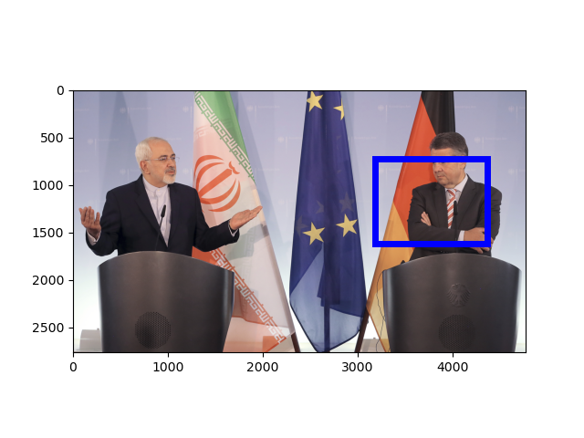
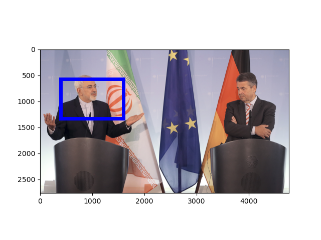

[Raw Text]: Iran's Foreign Minister Mohammad Javad Zarif, left, and his German counterpart, Sigmar Gabriel, not pictured, attend a news conference at the Foreign Affair's Office in Berlin, Germany, June 27, 2017.
======================================================================
Mention: http://www.isi.edu/gaia/entities/uiuc/VOA_EN_NW_2017_06_27_3918160_0/EN_Entity_EDL_0000453
---- VOA_EN_NW_2017_06_27_3918160_0:24-43 Iran ' s Foreign Minister Mohammad Javad Zarif , left , and his German counterpart , Sigmar Gabriel , not pictured , attend a news conference at the Foreign Affair ' s Office in Berlin , Germany , June 27 , 2017 .
---- VOA_EN_NW_2017_06_27_3918160_0:56-58 Iran ' s Foreign Minister Mohammad Javad Zarif , left , and his German counterpart , Sigmar Gabriel , not pictured , attend a news conference at the Foreign Affair ' s Office in Berlin , Germany , June 27 , 2017 .
---- VOA_EN_NW_2017_06_27_3918160_0:15-22 Iran ' s Foreign Minister Mohammad Javad Zarif , left , and his German counterpart , Sigmar Gabriel , not pictured , attend a news conference at the Foreign Affair ' s Office in Berlin , Germany , June 27 , 2017 .
Image:
GroundingConfidence: http://www.columbia.edu/AIDA/DVMM/Entities/GroundingBox/RUN00006/JPG/VOA_EN_NW_2017_06_27_3918160_0/4, 0.3529874

GroundingConfidence: http://www.columbia.edu/AIDA/DVMM/Entities/GroundingBox/RUN00006/JPG/VOA_EN_NW_2017_06_27_3918160_0/3, 0.3529874
Event:
======================================================================
Mention: http://www.isi.edu/gaia/entities/uiuc/VOA_EN_NW_2017_06_27_3918160_0/EN_Entity_EDL_0000100
---- VOA_EN_NW_2017_06_27_3918160_0:67-77 Iran ' s Foreign Minister Mohammad Javad Zarif , left , and his German counterpart , Sigmar Gabriel , not pictured , attend a news conference at the Foreign Affair ' s Office in Berlin , Germany , June 27 , 2017 .
---- VOA_EN_NW_2017_06_27_3918160_0:87-93 Iran ' s Foreign Minister Mohammad Javad Zarif , left , and his German counterpart , Sigmar Gabriel , not pictured , attend a news conference at the Foreign Affair ' s Office in Berlin , Germany , June 27 , 2017 .
Image:
GroundingConfidence: http://www.columbia.edu/AIDA/DVMM/Entities/GroundingBox/RUN00006/JPG/VOA_EN_NW_2017_06_27_3918160_0/2, 0.5368118
GroundingConfidence: http://www.columbia.edu/AIDA/DVMM/Entities/GroundingBox/RUN00006/JPG/VOA_EN_NW_2017_06_27_3918160_0/1, 0.5368118

Event:
======================================================================